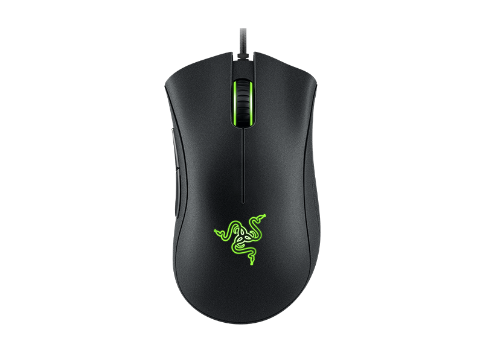

Игровая мышь Razer DeathAdder Essential
Краткое описание товара
Мышь проводная Razer DeathAdder Essential имеет конструкцию, продуманную до мелочей.
Характеристики товара
Основные характеристики
- Общее количество кнопок — 5
- Проводная — да
| Длина провода (в метрах) | 1.8 |
| Интерфейс подключения | USB |
| Катушка для кабеля | нет |
Подробное описание товара
Мышь проводная Razer DeathAdder Essential имеет конструкцию, продуманную до мелочей. К вашим услугам удобный хват, идеальная развесовка и удобные кнопки: все это гарантирует подлинное удовольствие при участии в самых динамичных игровых баталиях. В арсенале устройства, имеющего разрешение оптического датчика 6400 dpi, 5 кнопок. Мышь подходит для использования как правой, так и левой рукой. Для подключения используется USB-интерфейс. Длина кабеля манипулятора равна 1.8 м: этот показатель гарантирует вам значительную степень свободы перемещения. USB-разъем имеет позолоченное покрытие.
Особенности товара
Особенностью Razer DeathAdder Essential являются бесшумные ножки Ultraslick. Предусмотрен режим постоянной готовности. Вы сможете по достоинству оценить стильность и функциональность подсветки зеленого цвета. Мышь изготовлена из приятного наощупь матового пластика черного цвета. Габаритные размеры устройства составляют 70x44x127 мм. Масса мыши – 105 г. Razer DeathAdder Essential упакована во внешне эффектную коробку, и станет отличным подарком для ваших друзей и родственников.